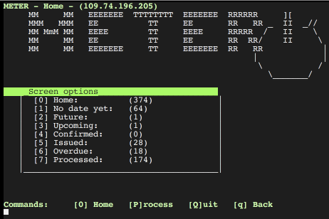

Meter study

The Meter study is a research project at the University of Oxford’s Environmental Change Institute (ECI) collecting data on household demographics, activities and electricity use. The aim is to better understand the timing of electricity use in households and identify potential routes towards flexibility in electricity use, which could support the emergence of more sustainable energy systems.
Activity recorder

The app to record activities is kept in the Meter App repository. This has it’s own documentation.
User data visualisation

A D3 based visualisation of activity and electricity data for a single household. See Your data repository.
Admin interface

The Meter interface is a terminal based app to configure the research tools of the Meter study and support data handling with the MySQL database.
The forms support Mutt-style navigation and key bindings. Build on the npyScreen package.
-
class
interface.ActionControllerData(*args, **keywords)[source]
action key shortcuts
-
SwitchScreen(*args, **keywords)[source]
convert key number to character (48 -> ‘0’)
-
actionHighlighted(selectedLine, keypress)[source]
choose action based on the display status and selected line
-
mute(*args)[source]
does nothing
-
updateActionKeys(ScreenKey)[source]
redefine what keys do
-
class
interface.ActionControllerSearch(parent=None)[source]
search and command settings
-
class
interface.MeterForms[source]
add Forms to the app
-
class
interface.MeterMain(*args, **keywords)[source]
npyScreen from with mutt style features
-
ACTION_CONTROLLER
alias of ActionControllerSearch
-
MAIN_WIDGET_CLASS
alias of ActionControllerData
-
beforeEditing()[source]
connect/reconnect
-
email(key)[source]
compose_email(Screen[ScreenKey][chr(key)[‘EmailType’])
-
getHHindex(HouseholdID)[source]
find at what position in the list the current hh is
-
getMenuText()[source]
get content based on current ScreenKey
-
initialise()[source]
menu and sub-menues
-
class
interface.MeterTheme[source]
defines colours
-
interface.aMeter_setup()[source]
compile and upload the cordova activity app
-
interface.callShell(command)[source]
executes shell command and returns all text displayed
-
interface.compose_email(type, edit=True)[source]
Contact participant with editabel email
-
interface.data_download(*self)[source]
pull files from phone
-
interface.device_config(meterType)[source]
assign meta id and copy config / id files to device
-
interface.eMeter_setup()[source]
superseeded by flash_phone()
-
class
interface.editContactForm(name=None, parentApp=None, framed=None, help=None, color='FORMDEFAULT', widget_list=None, cycle_widgets=False, *args, **keywords)[source]
gets fields from database, collects new entries
-
class
interface.editHouseholdForm(name=None, parentApp=None, framed=None, help=None, color='FORMDEFAULT', widget_list=None, cycle_widgets=False, *args, **keywords)[source]
EditHousehold - Shows all entries for editing
-
interface.email_many()[source]
compose message
-
interface.flash_phone(meterType)[source]
restore phone from Master copy
get the status for this household
-
interface.getDateChoice(hhID)[source]
return collection date as a string: “Sun, 31 Dec”
-
interface.getDateOfFirstEntry(thisFile, col)[source]
Find the date string in a data file
-
interface.getDateTimeFormated(dts)[source]
DateTimeString as received from database: return 31 Jan 16
-
interface.getDeviceCount(householdID)[source]
return count of devices configured for this date
-
interface.getDeviceMetaIDs(householdID)[source]
check if eMeter has been configured
-
interface.getDeviceRequirements(householdID)[source]
formated list of counters and ‘E’ for people/eMeter
-
interface.getDeviceSerialNumber(meterType)[source]
download the sn from device - if none present, set one up
-
interface.getDevicesForDate(householdID, dateChoice)[source]
check if eMeter has been configured
-
interface.getDevicesReadings(householdID, dateChoice)[source]
check if eMeter has been configured
-
interface.getDiaryByNumber(number)[source]
pick from the list of “A”-type Meta entries for this HH
-
interface.getHHdateChoice(hhID)[source]
reads a sql date in format “2016-12-31”
-
interface.getHHdtChoice(hhID)[source]
reads a sql date in format “2016-12-31” and returns datetime object
-
interface.getMetaData(MetaFile, ItemName)[source]
extract content from meta file (or any other file)
-
interface.getMetaIDs(hhID, deviceType)[source]
check if eMeter has been configured
-
interface.getParticipantCount(householdID)[source]
get number of diaries required
-
interface.getReadingPeriods(_householdID, _condition, _duration)[source]
returns start and end of consequitive records matching the condition
-
interface.get_time_period(timestr)[source]
convert into one of 144 10minute periods of the day
-
class
interface.metaFileInformation(name=None, parentApp=None, framed=None, help=None, color='FORMDEFAULT', widget_list=None, cycle_widgets=False, *args, **keywords)[source]
The MetaForm
-
class
interface.newContactForm(name=None, parentApp=None, framed=None, help=None, color='FORMDEFAULT', widget_list=None, cycle_widgets=False, *args, **keywords)[source]
gets fields from database, collects new entries
-
interface.next_period(thisTime)[source]
advances datetime object by 10 minutes, e.g. ‘04:50:00’ -> ‘05:00:00’
-
interface.phone_for_paper_diary(metaID)[source]
the id is typed on command line
-
interface.printSticker(text, fileName)[source]
pandoc file into printabe format and send to printer
-
interface.print_address()[source]
formated address label
-
interface.print_letter(letterType)[source]
personal letter as pdf
-
interface.root_phone()[source]
push root and flash packages
-
interface.setSerialNumber(SerialNumber)[source]
command typed number is set as serial number for current metaID
-
interface.showScreen(key)[source]
populate screen based ScreenKey dict
-
class
interface.snEntry(*args, **keywords)[source]
pops up to collect a serial number
-
interface.time_in_seconds(timestr)[source]
not used - just kept for reference...
-
interface.updateConfigFile(_id, _dateChoice, meterType)[source]
write id information and created dates and times for follow up queries
-
interface.updateDataQuality(idMeta, Quality)[source]
set Quality in Meta table
-
interface.updateHouseholdStatus(householdID, status)[source]
update status of household
-
interface.updateIDfile(_id)[source]
update device date and id information
-
interface.upload_10min_readings(metaIDe)[source]
use panas to resample readings
-
interface.upload_1min_readings(metaIDe)[source]
use panas to resample readings
-
interface.xgetDeviceMetaIDs(householdID, deviceType)[source]
check if eMeter has been configured
Meter Module
This module provides SQL functionality to connect, query and upload to the database.
-
meter.backup_database()[source]
dump sql in local dated file
-
meter.connectDatabase(_dbHost)[source]
try to connect to server - else to local database
-
meter.connectDatabaseOLD(_dbHost)[source]
remove
-
meter.executeSQL(_sqlq)[source]
to safeguard against dropped connections
-
meter.getContact(hhID)[source]
return contactID for given household
-
meter.getDateTimeFormated(dts)[source]
DateTimeString as received from database: return 31 Jan 16
-
meter.getHouseholdCount(condition)[source]
count household in database matching the modus criteria
-
meter.getHouseholdForContact(contactID)[source]
find the first HH match for this cID - WARNING - there could be more than one!!!
-
meter.getHouseholdForMeta(_metaID)[source]
find the one match of HH for this metaID
-
meter.getNameEmail(table, criterium)[source]
returns name and email for matched
-
meter.getNameOfContact(thisContactID)[source]
get Contact name for a given Contact
-
meter.getSQL(_sqlq)[source]
to safeguard against dropped connections
-
meter.getSecurityCode(householdID)[source]
get the security code for this household
-
meter.getStatus(householdID)[source]
get the status for this household
-
meter.householdExists(hhID)[source]
true if record is found
-
meter.message(msgStr)[source]
shorthand to display debug information
-
meter.toggleDatabase()[source]
switch between remote and local db
See GitHub Documentation for more information.